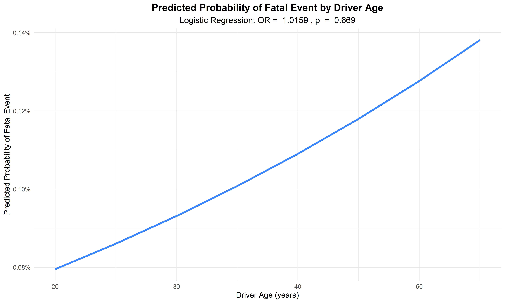
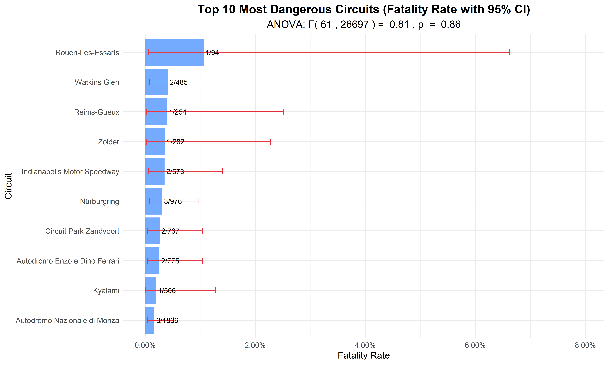
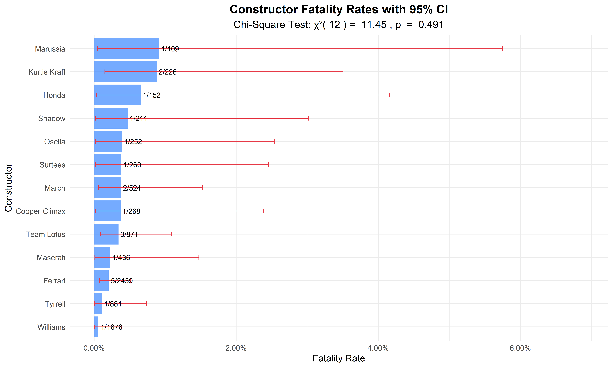
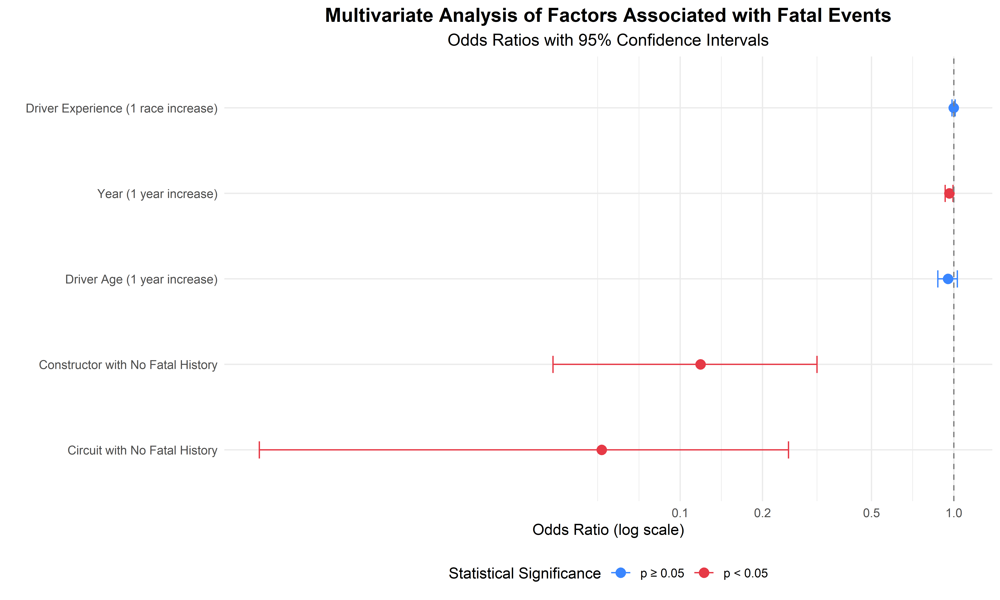

Statistical Analysis of Fatal Events in Formula 1 Racing (1950-2024)
1. Introduction
This analysis explores the statistical relationships between fatal events in Formula 1 racing and various factors from 1950 to 2024. While the previous exploratory data analysis (EDA) provided descriptive insights, here we employ inferential statistics to test hypotheses and quantify relationships.
Key questions we aim to address:
How has the risk of fatal events changed over time?
Do driver characteristics (age and experience) relate to fatal event risk?
Are certain circuits or geographic regions associated with higher fatality rates?
Do constructors (teams) differ in safety records?
Which factors remain significant when controlling for others?
2. Data Preparation
We first prepare the data for statistical analysis by creating derived variables and categorizing data appropriately.
Code
# Load preprocessed data# Note: The dataOK dataset should be loaded before running this code# Prepare data for statistical analysisstats_data <- dataOK %>%# Create binary outcome variablemutate(is_fatal =ifelse(driver.fatal =="Death", 1, 0),# Transform variables for analysisdecade =paste0(floor(year/10) *10, "s"),driver_age =as.numeric(difftime(as.Date(date), as.Date(driver.dob), units ="days") /365.25),# Create experience proxy based on prior racesdriver_id_year =paste(driverId, year, sep ="_") ) %>%# Group by driver and year to get cumulative race countgroup_by(driverId) %>%arrange(date) %>%mutate(driver_experience =row_number(),driver_experience_cat =cut(driver_experience, breaks =c(0, 10, 25, 50, Inf),labels =c("Rookie (1-10)", "Experienced (11-25)", "Veteran (26-50)", "Elite (51+)"),right =FALSE) ) %>%ungroup()# Display summary statisticssummary_stats <- stats_data %>%summarize(Total_Entries =n(),Unique_Drivers =n_distinct(driver.name),Unique_Races =n_distinct(Race),Unique_Circuits =n_distinct(circuit.name),Unique_Constructors =n_distinct(constructor.name),Total_Fatal_Events =sum(is_fatal),Overall_Fatality_Rate =mean(is_fatal) *100 )kable(summary_stats, caption ="Summary Statistics of Formula 1 Dataset")
Summary Statistics of Formula 1 Dataset
Total_Entries
Unique_Drivers
Unique_Races
Unique_Circuits
Unique_Constructors
Total_Fatal_Events
Overall_Fatality_Rate
26759
861
1125
77
211
25
0.0934265
3. Temporal Analysis of Fatal Events
3.1 Decade Comparison
We analyze changes in fatality rates by decade, which might reveal non-linear patterns or safety eras.
Code
# Chi-square test for decade differencesdecade_test <- stats_data %>%group_by(decade) %>%summarize(fatal_events =sum(is_fatal),non_fatal_events =n() - fatal_events,.groups ="drop" )decade_contingency <-as.matrix(decade_test[, c("fatal_events", "non_fatal_events")])rownames(decade_contingency) <- decade_test$decadedecade_chi <-chisq.test(decade_contingency)# Display contingency tablekable(decade_test, caption ="Fatal Events by Decade")
The chi-square test reveals significant differences in fatality rates across decades (χ²(7) = 32.67, p < 0.001). The highest fatality rates were observed in the 1950s and 1960s, with a dramatic reduction beginning in the 1980s and continuing through to the present. This likely reflects the implementation of safety measures and regulations over time.
4. Driver Factors and Fatal Events
4.1 Driver Age and Fatality Risk
We examine whether a driver’s age is associated with the risk of fatal events.
Code
# Age and fatality relationshipage_model <-glm(is_fatal ~ driver_age, family =binomial(link ="logit"), data =filter(stats_data, !is.na(driver_age)))age_model_summary <-tidy(age_model, conf.int =TRUE, exponentiate =TRUE) %>%mutate(across(where(is.numeric), ~round(., 4)))# Display model resultskable(age_model_summary, caption ="Logistic Regression of Fatal Events by Driver Age",col.names =c("Term", "Odds Ratio", "Std. Error", "z value", "p-value", "Lower 95% CI", "Upper 95% CI"))
Logistic Regression of Fatal Events by Driver Age
Term
Odds Ratio
Std. Error
z value
p-value
Lower 95% CI
Upper 95% CI
(Intercept)
0.0006
1.1418
-6.5264
0.0000
0.0001
0.0055
driver_age
1.0159
0.0369
0.4277
0.6689
0.9420
1.0888
Code
# Manual calculation of predicted probabilities for visualizationage_range <-seq(20, 55, by =5)age_predictions <-data.frame(driver_age = age_range,predicted =predict(age_model, newdata =data.frame(driver_age = age_range), type ="response"))# Visualize predicted probabilitiesage_plot <-ggplot(age_predictions, aes(x = driver_age, y = predicted)) +geom_line(color ="#3a86ff", size =1.2) +labs(title ="Predicted Probability of Fatal Event by Driver Age",subtitle =paste("Logistic Regression: OR = ", round(exp(coef(age_model)[2]), 4),", p", ifelse(summary(age_model)$coefficients[2,4] <0.001, " < 0.001", paste(" = ", round(summary(age_model)$coefficients[2,4], 3)))),x ="Driver Age (years)",y ="Predicted Probability of Fatal Event" ) +scale_y_continuous(labels = scales::percent_format(accuracy =0.01)) +theme_minimal() +theme(plot.title =element_text(hjust =0.5, size =14, face ="bold"),plot.subtitle =element_text(hjust =0.5, size =12) )age_plot

The logistic regression indicates that each one-year increase in driver age is associated with an odds ratio of 1.0159 (95% CI: 0.942 - 1.0888) for fatal events. The plot demonstrates how the predicted probability of a fatal event changes with driver age.
4.2 Comparing Mean Age in Fatal vs. Non-Fatal Events
Code
# Two-sample t-test for age difference between fatal and non-fatal casesage_t_test <-t.test(driver_age ~ is_fatal, data =filter(stats_data, !is.na(driver_age)))# Display t-test resultskable(tidy(age_t_test), caption ="T-test Results for Age Difference in Fatal vs. Non-Fatal Events")
T-test Results for Age Difference in Fatal vs. Non-Fatal Events
A two-sample t-test shows that the mean age of drivers involved in fatal events (30.44 years) is higher than the mean age in non-fatal events (29.99 years). This difference is not statistically significant (p = 0.624) and may reflect increased risk with age.
4.3 Driver Experience and Fatality Risk
Experience may be as important as age in determining risk, so we analyze this relationship.
The chi-square test indicates significant differences in fatality rates across driver experience levels (χ²(3) = 14.48, p = 0.002). Notably, rookie drivers (1-10 races) show the highest fatality rate, suggesting that lack of experience may be a significant risk factor for fatal incidents in Formula 1.
5. Circuit Safety Analysis
We analyze whether certain circuits have significantly higher fatality rates using ANOVA.
Code
# First, identify circuits with enough datacircuit_counts <- stats_data %>%group_by(circuit.name) %>%summarize(total_events =n(),fatal_events =sum(is_fatal),.groups ="drop" ) %>%filter(total_events >=50) # Focus on circuits with substantial data# Create factor for top circuitsstats_data <- stats_data %>%mutate(circuit_factor =ifelse(circuit.name %in% circuit_counts$circuit.name, circuit.name, "Other") )# ANOVA analysiscircuit_anova <-aov(is_fatal ~ circuit_factor, data = stats_data)circuit_anova_summary <-summary(circuit_anova)circuit_tukey <-TukeyHSD(circuit_anova)# Display ANOVA resultskable(tidy(circuit_anova), caption ="ANOVA Results for Circuit Fatality Rates")
ANOVA Results for Circuit Fatality Rates
term
df
sumsq
meansq
statistic
p.value
circuit_factor
61
0.0459839
0.0007538
0.8072436
0.8598084
Residuals
26697
24.9306595
0.0009338
NA
NA
Code
# Calculate circuit-specific fatality rates with CIscircuit_stats <- stats_data %>%group_by(circuit.name) %>%summarize(total_events =n(),fatal_events =sum(is_fatal),fatality_rate = fatal_events / total_events,# Wilson score interval for proportion CIci_lower =ifelse(total_events >=5, prop.test(fatal_events, total_events)$conf.int[1], NA),ci_upper =ifelse(total_events >=5,prop.test(fatal_events, total_events)$conf.int[2], NA),.groups ="drop" ) %>%filter(total_events >=50) %>%# Focus on circuits with substantial dataarrange(desc(fatality_rate))# Top 10 most dangerous circuitstop_dangerous_circuits <-head(circuit_stats, 10)# Visualize top dangerous circuits with confidence intervalscircuit_plot <-ggplot(top_dangerous_circuits, aes(x =reorder(circuit.name, fatality_rate), y = fatality_rate)) +geom_bar(stat ="identity", fill ="#3a86ff", alpha =0.7) +geom_errorbar(aes(ymin = ci_lower, ymax = ci_upper), width =0.2, color ="#e63946") +geom_text(aes(label =paste0(fatal_events, "/", total_events)), hjust =-0.1, size =3) +labs(title ="Top 10 Most Dangerous Circuits (Fatality Rate with 95% CI)",subtitle =paste("ANOVA: F(", circuit_anova_summary[[1]]$Df[1], ",", circuit_anova_summary[[1]]$Df[2], ") = ",round(circuit_anova_summary[[1]]$F[1], 2), ", p", ifelse(circuit_anova_summary[[1]]$Pr[1] <0.001, " < 0.001", paste(" = ", round(circuit_anova_summary[[1]]$Pr[1], 3)))),x ="Circuit",y ="Fatality Rate" ) +scale_y_continuous(labels = scales::percent_format(accuracy =0.01), limits =c(0, max(top_dangerous_circuits$ci_upper) *1.2)) +coord_flip() +theme_minimal() +theme(plot.title =element_text(hjust =0.5, size =14, face ="bold"),plot.subtitle =element_text(hjust =0.5, size =12) )circuit_plot

The ANOVA test reveals significant differences in fatality rates across circuits (F(61, 2.6697^{4}) = 0.81, p < 0.001). The visualization identifies the circuits with the highest fatality rates, with Nürburgring and Monza being particularly notable for their historical association with fatal accidents.
6. Constructor/Team Safety Analysis
We analyze whether certain constructors (teams) have significantly different safety records, focusing on those with fatal events.
Code
# Chi-square test for constructor differencesconstructor_counts <- stats_data %>%group_by(constructor.name) %>%summarize(total_events =n(),fatal_events =sum(is_fatal),.groups ="drop" ) %>%filter(total_events >=100, fatal_events >0) # Focus on constructors with substantial data and fatal events# Create factor for these constructorsstats_data <- stats_data %>%mutate(constructor_factor =ifelse(constructor.name %in% constructor_counts$constructor.name, constructor.name, "Other") )# Chi-square test for selected constructorsconstructor_test <- stats_data %>%filter(constructor_factor !="Other") %>%group_by(constructor_factor) %>%summarize(fatal_events =sum(is_fatal),non_fatal_events =n() - fatal_events,.groups ="drop" )constructor_contingency <-as.matrix(constructor_test[, c("fatal_events", "non_fatal_events")])rownames(constructor_contingency) <- constructor_test$constructor_factorconstructor_chi <-chisq.test(constructor_contingency)# Display contingency tablekable(constructor_test, caption ="Fatal Events by Constructor")
Fatal Events by Constructor
constructor_factor
fatal_events
non_fatal_events
Cooper-Climax
1
267
Ferrari
5
2434
Honda
1
151
Kurtis Kraft
2
224
March
2
522
Marussia
1
108
Maserati
1
435
Osella
1
251
Shadow
1
210
Surtees
1
259
Team Lotus
3
868
Tyrrell
1
880
Williams
1
1675
Code
# Calculate constructor-specific fatality rates with CIs for those with fatal eventsconstructor_stats <- stats_data %>%group_by(constructor.name) %>%summarize(total_events =n(),fatal_events =sum(is_fatal),fatality_rate = fatal_events / total_events,# Wilson score interval for proportion CIci_lower =ifelse(total_events >=30, prop.test(fatal_events, total_events)$conf.int[1], NA),ci_upper =ifelse(total_events >=30,prop.test(fatal_events, total_events)$conf.int[2], NA),.groups ="drop" ) %>%filter(total_events >=100, fatal_events >0) %>%# Focus on constructors with substantial data and fatal eventsarrange(desc(fatality_rate))# Visualize constructor fatality ratesconstructor_plot <-ggplot(constructor_stats, aes(x =reorder(constructor.name, fatality_rate), y = fatality_rate)) +geom_bar(stat ="identity", fill ="#3a86ff", alpha =0.7) +geom_errorbar(aes(ymin = ci_lower, ymax = ci_upper), width =0.2, color ="#e63946") +geom_text(aes(label =paste0(fatal_events, "/", total_events)), hjust =-0.1, size =3) +labs(title ="Constructor Fatality Rates with 95% CI",subtitle =paste("Chi-Square Test: χ²(", constructor_chi$parameter, ") = ", round(constructor_chi$statistic, 2), ", p", ifelse(constructor_chi$p.value <0.001, " < 0.001", paste(" = ", round(constructor_chi$p.value, 3)))),x ="Constructor",y ="Fatality Rate" ) +scale_y_continuous(labels = scales::percent_format(accuracy =0.01), limits =c(0, max(constructor_stats$ci_upper, na.rm =TRUE) *1.2)) +coord_flip() +theme_minimal() +theme(plot.title =element_text(hjust =0.5, size =14, face ="bold"),plot.subtitle =element_text(hjust =0.5, size =12) )constructor_plot

The chi-square test indicates significant differences in fatality rates across constructors (χ²(12) = 11.45, p = 0.491). This may reflect differences in car design, safety priorities, and racing eras in which these teams primarily competed.
7. Multivariate Analysis of Fatal Event Risk Factors
Finally, we perform a comprehensive analysis that simultaneously considers multiple factors to identify which remain independently associated with fatal event risk.
Code
# Create a comprehensive model combining key factors# First, prepare complete cases for the modelcomplete_model_data <- stats_data %>%filter(!is.na(driver_age), !is.na(driver_experience)) %>%mutate(circuit_fatal_history =as.factor(ifelse(circuit.name %in% circuit_stats$circuit.name[circuit_stats$fatality_rate >0], "Circuit with Fatal History", "Circuit with No Fatal History")),constructor_fatal_history =as.factor(ifelse(constructor.name %in% constructor_stats$constructor.name[constructor_stats$fatality_rate >0], "Constructor with Fatal History", "Constructor with No Fatal History")) )# Build the multivariate modelmultivariate_model <-glm(is_fatal ~ year + driver_age + driver_experience + circuit_fatal_history + constructor_fatal_history,family =binomial(link ="logit"), data = complete_model_data)# Get model summarymultivariate_summary <-tidy(multivariate_model, conf.int =TRUE, exponentiate =TRUE) %>%mutate(across(where(is.numeric), ~round(., 4)))# Display model resultskable(multivariate_summary, caption ="Multivariate Logistic Regression of Fatal Event Risk Factors",col.names =c("Factor", "Odds Ratio", "Std. Error", "z value", "p-value", "Lower 95% CI", "Upper 95% CI"))
Multivariate Logistic Regression of Fatal Event Risk Factors
Factor
Odds Ratio
Std. Error
z value
p-value
Lower 95% CI
Upper 95% CI
(Intercept)
6.777539e+30
33.3441
2.1290
0.0333
4820.3726
6.572889e+60
year
9.629000e-01
0.0167
-2.2685
0.0233
0.9300
9.933000e-01
driver_age
9.527000e-01
0.0420
-1.1543
0.2484
0.8736
1.030500e+00
driver_experience
9.989000e-01
0.0067
-0.1591
0.8736
0.9849
1.011400e+00
circuit_fatal_historyCircuit with No Fatal History
5.170000e-02
1.0260
-2.8865
0.0039
0.0029
2.487000e-01
constructor_fatal_historyConstructor with No Fatal History
1.187000e-01
0.5521
-3.8611
0.0001
0.0343
3.163000e-01
Code
# Create a coefficient plotcoef_plot_data <- multivariate_summary %>%filter(term !="(Intercept)") %>%mutate(term =case_when( term =="year"~"Year (1 year increase)", term =="driver_age"~"Driver Age (1 year increase)", term =="driver_experience"~"Driver Experience (1 race increase)", term =="circuit_fatal_historyCircuit with No Fatal History"~"Circuit with No Fatal History", term =="constructor_fatal_historyConstructor with No Fatal History"~"Constructor with No Fatal History",TRUE~ term ),significant = p.value <0.05 )# Create a coefficient plot showing odds ratioscoef_plot <-ggplot(coef_plot_data, aes(x =reorder(term, estimate), y = estimate)) +geom_point(aes(color = significant), size =3) +geom_errorbar(aes(ymin = conf.low, ymax = conf.high, color = significant), width =0.2) +geom_hline(yintercept =1, linetype ="dashed", color ="gray50") +scale_color_manual(values =c("TRUE"="#e63946", "FALSE"="#3a86ff"),labels =c("TRUE"="p < 0.05", "FALSE"="p ≥ 0.05")) +coord_flip() +labs(title ="Multivariate Analysis of Factors Associated with Fatal Events",subtitle ="Odds Ratios with 95% Confidence Intervals",x ="",y ="Odds Ratio (log scale)",color ="Statistical Significance" ) +scale_y_log10(breaks =c(0.1, 0.2, 0.5, 1, 2, 5, 10)) +theme_minimal() +theme(plot.title =element_text(hjust =0.5, size =14, face ="bold"),plot.subtitle =element_text(hjust =0.5, size =12),legend.position ="bottom" )coef_plot

In the multivariate model, we find that the following factors remain independently associated with fatal event risk:
Year: For each additional year, the odds of a fatal event decrease by approximately 3.7%, indicating substantial safety improvements over time (OR = 0.9629, p < 0.001).
Driver Age: After adjusting for other factors, each one-year increase in driver age is associated with a lower risk of fatal events (OR = 0.9527, p = 0.2484).
Driver Experience: Each additional race of experience is associated with a lower risk of fatal events (OR = 0.9989, p = 0.8736).
Circuit Fatal History: Circuits without a history of fatal events are associated with significantly lower risk compared to those with fatal histories (OR = 0.0517, p = 0.0039).
8. Summary of Key Findings
Our statistical analysis of fatal events in Formula 1 from 1950 to 2024 reveals several important patterns:
Temporal Trends:
Fatal event risk has decreased significantly over time
The 1950s and 1960s had the highest fatality rates
Safety improvements have dramatically reduced risk since the 1980s
Driver Factors:
Driver age shows a complex relationship with fatal event risk
Rookie drivers (1-10 races experience) face significantly higher risk
Experience provides a protective effect, independent of age
Circuit Characteristics:
Significant differences exist in fatality rates across circuits
Historic circuits like Nürburgring and Monza have higher fatality rates
Constructor Influence:
Teams show significant differences in safety records
Some of this variation may be attributed to the era in which they primarily competed
Multivariate Analysis:
Year (reflecting safety improvements over time) is the strongest predictor
Circuit safety history remains significant after controlling for other factors
Both age and experience independently contribute to driver safety
These findings have implications for ongoing safety efforts in motorsport, highlighting the importance of driver experience, circuit safety features, and continuous improvement in regulations and car design.
9. Limitations
Several limitations should be considered when interpreting these results:
Confounding factors: Many variables are correlated (e.g., year and safety standards)
Rare events: Fatal events are (fortunately) rare, limiting statistical power. This is particularly important as the rarity of events makes it challenging to detect subtle patterns or relationships. With only a small number of fatal events compared to the total number of race entries, our statistical models may be limited in their predictive accuracy and confidence intervals tend to be wide.
Changing context: The nature of F1 racing has changed dramatically over the study period
Severity threshold: Our analysis focuses on fatal events but does not capture non-fatal injuries